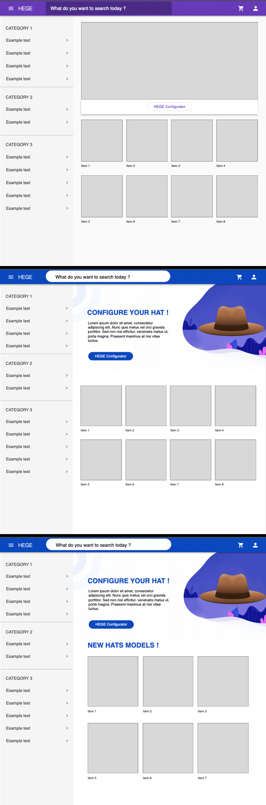
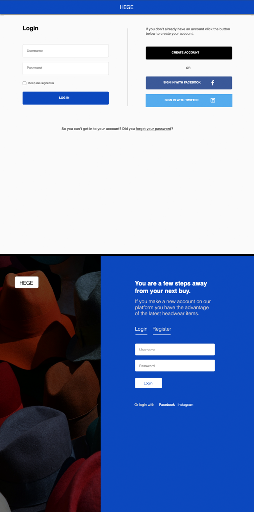

Community Draft
We developed an online store to shop for headwear items. The store includes the ability to view a product with augmented reality. Moreover we also offer the possibility for potential buyers to look for their favorite product with a configurator for season or fashion preferences.
Today's headwear items are a necessity that takes into account trends and fashion. To help our potential clients, we built a platform to buy headwear from a long list. In order to be able to browse every object we have put together a graphical configurator that guides the user through several preliminary stages. At the same time, I made a search function to get to the desired object as soon as possible.
Our high-level goals are to:
We want to reach all the planned values in order to attract as many buyers as possible on our platform for headwear. For this we hope that the VR function will play an important role as well as configurator page.
To make design as interesting as possible for a potential buyer, we used Google material design. We went through four iteration processes until we reached the final product. We used as primary color blue and for page elements we used a range of white colors. Also black is used for the logo and text content and VR button. Design was made for Desktop, Tablet, Mobile and is fully responsive.
Home page going through the design process:
Login page in the design process:
If the user wants to find an article, then he click on the HEGE Configurator button on the home page. If he wants to search for an article, he writes the name of the item in the search bar and press enter. If he want to go on an article he clicks on it. If he wants to use the VR function, press the specific button for the item.
To start using our project clone it from Github and click on index.html in the structure tree.
Css └─configurator.css └─index.css └─login.css └─product.css └─search.css └─sidenav.css └─toolbar.css Javascript └─script.css Images └─1.jpg └─2.jpg └─3.png └─.... └─9.png index.html login.html register.html product.html search.html configS1.html configS2.html configS3.html slider-bg3.png